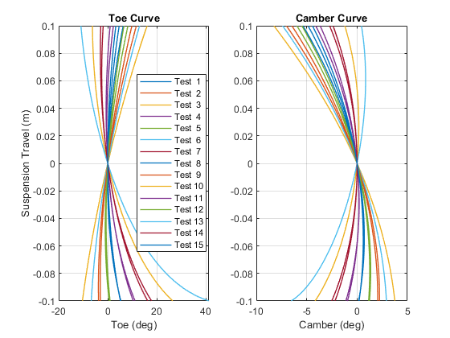
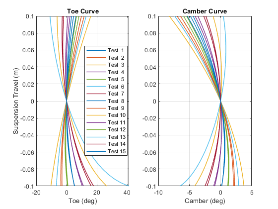

Tuning Suspension Hardpoints to Minimize Bump Steer
This example tunes suspension hardpoints to minimize the bump steer in a vehicle suspension. Using MATLAB scripts or an App you can specify the which hardpoints (such as outboard hardpoint on the upper wishbone) and which coordinates (such as along the x, y, or z axis) should be tuned.
First a sweep is performed to show the design space. If two coordinates are selected for tuning, a 2D plot will be shown, otherwise a table of the tested values and the resulting performance metric. Next, optimization algorithms are used to find the combination that comes closest to the target value of the selected performance metric.
The documentation below shows the steps performed on testrig_quarter_car.slx. They can also be performed on testrig_quarter_car_doublewishbone.slx and testrig_quarter_car_pullrod.slx.
Contents
Quarter-Car Testrig Model
The model testrig_quarter_car can be configured to test several different types of suspensions. The suspension type is selected based on field Vehicle.Chassis.SuspA1.Linkage.class.Value within a MATLAB data structure. The locations of the hardpoints are defined within that structure.
mdl = 'testrig_quarter_car'; open_system(mdl) sm_car_load_vehicle_data(mdl,'064'); sm_car_config_variants(mdl);

Suspension Model
This is the structure of the suspension. The entire suspension is parameterized based on hardpoints. Those hardpoints are defined based on [x y z] locations relative to a common reference point. In the default set of data provided, that reference point is on the ground at the point midway between where the left and right tires touch the ground.
open_system('testrig_quarter_car/Linkage/FiveLinkShockFront','force');

Define Sets of Values for Parameter Sweep
The portion of the design space that will be tested is defined by selecting hardpoint coordinates and a set of values for that coordinate. In this example, we vary the z-coordinate for both ends of the track rod in the steering system. MATLAB will test each combination of values for the two points and plot the result. Any number of coordinates can be used for the sweep, we limited it to two in the example so that we could plot the results as a surface.
% Settings for first hardpoint coordinate adjSet1 = -0.04:0.02:0.04; % Relative range in m hp_list(1).part = 'TrackRod'; hp_list(1).point = 'sInboard'; hp_list(1).index = 3; hp_list(1).valueSet = ... Vehicle.Chassis.SuspA1.Linkage.(hp_list(1).part). ... (hp_list(1).point).Value(hp_list(1).index) + adjSet1; % Settings for second hardpoint coordinate adjSet2 = -0.04:0.04:0.04; % Relative range in m hp_list(2).part = 'TrackRod'; hp_list(2).point = 'sOutboard'; hp_list(2).index = 3; hp_list(2).valueSet = ... Vehicle.Chassis.SuspA1.Linkage.(hp_list(2).part). ... (hp_list(2).point).Value(hp_list(2).index) + adjSet2; % Performance metric to plot or display metricName = 'Bump Steer';
Conduct Parameter Sweep
This function will create a simulation input object where each entry has a unique combination of the hardpoint coordinate values specified above. The simulations will be run using the sim() command, and at the end a surface plot shows how the selected performance metric (in this case bump steer) varies with the two coordinate values.
The toe and camber curves for each test are plotted.
[simInput, simOut, TSuspMetricsSet] = ...
testrig_quarter_car_sweep(mdl,Vehicle,hp_list);
[22-Nov-2024 23:27:57] Running simulations... [22-Nov-2024 23:28:04] Completed 1 of 15 simulation runs [22-Nov-2024 23:28:06] Completed 2 of 15 simulation runs [22-Nov-2024 23:28:08] Completed 3 of 15 simulation runs [22-Nov-2024 23:28:09] Completed 4 of 15 simulation runs [22-Nov-2024 23:28:11] Completed 5 of 15 simulation runs [22-Nov-2024 23:28:12] Completed 6 of 15 simulation runs [22-Nov-2024 23:28:13] Completed 7 of 15 simulation runs [22-Nov-2024 23:28:15] Completed 8 of 15 simulation runs [22-Nov-2024 23:28:16] Completed 9 of 15 simulation runs [22-Nov-2024 23:28:18] Completed 10 of 15 simulation runs [22-Nov-2024 23:28:19] Completed 11 of 15 simulation runs [22-Nov-2024 23:28:21] Completed 12 of 15 simulation runs [22-Nov-2024 23:28:22] Completed 13 of 15 simulation runs [22-Nov-2024 23:28:24] Completed 14 of 15 simulation runs [22-Nov-2024 23:28:25] Completed 15 of 15 simulation runs
 
 Display and Plot the Results of Sweep
The parameter values tested and performance metric are shown in a table. For tests with two performance metrics, a surface plot is shown.
disp('Results of Sweep'); TSuspMetricsReq = ... testrig_quarter_car_sweep_plot(hp_list,TSuspMetricsSet,metricName)
Results of Sweep
TSuspMetricsReq =
15×4 table
par_TrackRodIn3 par_TrackRodOut3 Bump_Steer Bump_SteerUnits
_______________ ________________ __________ _______________
0.2 0.19 13.206 "deg/m"
0.2 0.23 79.925 "deg/m"
0.2 0.27 131 "deg/m"
0.22 0.19 -31.265 "deg/m"
0.22 0.23 42.589 "deg/m"
0.22 0.27 99.123 "deg/m"
0.24 0.19 -77.778 "deg/m"
0.24 0.23 4.0932 "deg/m"
0.24 0.27 66.04 "deg/m"
0.26 0.19 -126.74 "deg/m"
0.26 0.23 -36.229 "deg/m"
0.26 0.27 31.947 "deg/m"
0.28 0.19 -178.15 "deg/m"
0.28 0.23 -78.247 "deg/m"
0.28 0.27 -3.4999 "deg/m"
Optimize Selected Hardpoints to Achieve Target Bump Steer
Now that we have seen the design space, we will use optimization algorithms to identify the coordinates that achieve the desired level of bump steer. The list of hardpoint coordinates and their ranges are provided to the optimization algorithm. An objective function computes runs a simulation with those values and computes the performance metric. After the optimizer converges on a value or reaches the limit on the number of iterations permitted, the result is shown and overlaid on the parameter sweep plot.
tgtValue = 2; % deg/m [xFinal,fval,TSuspMetrics] = ... testrig_quarter_car_optim(mdl,Vehicle,hp_list,metricName,tgtValue);
Metrics with Initial Set of Parameter Values
TSuspMetricsStart =
7×4 table
Names Values Units Description
_____________ _______ _______ ____________________________
"Toe" 4.7167 "deg" "+Toe In"
"Camber" 0.26838 "deg" "+Top Out"
"Caster" 15.84 "deg" "+Top Rear of WC"
"KPI" 2.7472 "deg" "+Top Inside Bottom"
"Bump Steer" 4.0932 "deg/m" "+/- 10mm, +Toe In"
"Bump Camber" 4.0932 "deg/m" "+/- 10mm, +Top Out"
"Bump Caster" 28.373 "deg/m" "+/- 10mm, +Caster Decrease"
Iter Func-count f(x) MeshSize Method
0 1 2.09316 0.02
1 5 2.09316 0.005 Refine Mesh
2 9 0.268371 0.01 Successful Poll
3 13 0.268371 0.0025 Refine Mesh
4 17 0.268371 0.000625 Refine Mesh
5 21 0.0365402 0.00125 Successful Poll
6 25 0.0365402 0.0003125 Refine Mesh
7 29 0.0365402 7.812e-05 Refine Mesh
patternsearch stopped because the mesh size was less than options.MeshTolerance.
Elapsed time for optimization = 49.0448
Metrics with Optimized Set of Parameter Values
TSuspMetricsFinal =
7×4 table
Names Values Units Description
_____________ _______ _______ ____________________________
"Toe" 3.7597 "deg" "+Toe In"
"Camber" -4.1687 "deg" "+Top Out"
"Caster" 15.84 "deg" "+Top Rear of WC"
"KPI" 2.7472 "deg" "+Top Inside Bottom"
"Bump Steer" 2.0365 "deg/m" "+/- 10mm, +Toe In"
"Bump Camber" 2.0365 "deg/m" "+/- 10mm, +Top Out"
"Bump Caster" 28.373 "deg/m" "+/- 10mm, +Caster Decrease"


Workflow Using MATLAB App
An App lets you select the hardpoint coordinates you wish to sweep or optimize. You can select the range and increment for a sweep, and you can select the range and target performance metric for an optimization. Once you have configured your sweep or optimization, press the Run button.
Anything done with the App can also be done using MATLAB functions. As you configure and run the test, commands are echoed to the MATLAB command window so you know which commands will automate those steps.

close all